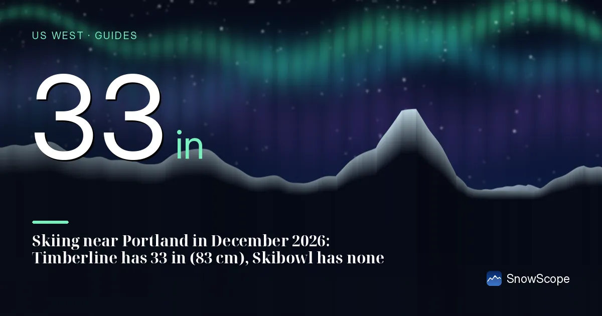

Skiing near Portland in December 2026: Timberline has 33 in (83 cm), Skibowl has none
From Portland, head for Timberline or Mt. Hood Meadows this weekend: both have more than 33 in (83 cm) on their upper slopes and about 14 in (35 cm) more is forecast by Monday. Skibowl, the lowest of the Mt. Hood areas, has 0 in (0 cm) today. The difference is almost entirely altitude.
See the live snow forecast for Portland in the SnowScope appSnow depth, powder alerts and the 3D map, free.
One mountain, three snowpacks
Timberline's lifts climb to 8,484 ft (2,586 m), Meadows to 7,303 ft (2,226 m), Skibowl to 5,013 ft (1,528 m). This week's storms brought 20 in (51 cm) to Timberline in three days and nothing that stayed on the ground at Skibowl: the snow line sat between them for most of the week. That is the normal early-season rhythm on Mt. Hood, where wet Pacific storms put snow on the upper mountain and rain on Government Camp.
In a usual year Skibowl's season with a 30 cm base starts around December 1, roughly two weeks after Timberline's, so it is not late yet.
| Ski area | Base | Top | Snow today | Next 3 days |
|---|---|---|---|---|
| Timberline | 3,983 ft (1,214 m) | 8,484 ft (2,586 m) | 33" | 13" |
| Mt. Hood Meadows | 4,528 ft (1,380 m) | 7,303 ft (2,226 m) | 33" | 14" |
| Mt. Hood Skibowl | 3,652 ft (1,113 m) | 5,013 ft (1,528 m) | 0" | 2" |
| Mt. Bachelor | 5,702 ft (1,738 m) | 8,937 ft (2,724 m) | 16" | 7" |
Timberline and Meadows: what December usually brings
At 6,234 ft (1,900 m), the height of our 46-winter record for Timberline, the usual depth climbs from 40 in (102 cm) on December 8 to 5.7 ft (174 cm) on Christmas Day. For Meadows at 5,915 ft (1,803 m) the same dates read 36 in (91 cm) and 5.4 ft (164 cm).
The spread between winters is wide on Mt. Hood: at Timberline one Christmas in four had less than 33 in (85 cm) and one in four more than 8.8 ft (267 cm). The deepest winter on record peaked at 35.6 ft (1085 cm) (2007-08), the leanest at 40 in (101 cm) (2014-15).
The forecast to Monday
Timberline expects about 13 in (34 cm) by Monday and Meadows about 14 in (35 cm); over seven days our forecast reaches 29 in (73 cm) at the top of Timberline. Skibowl gets 2 in (4 cm), which will not open much terrain. Follow the daily numbers on the Timberline snow page and the Mt. Hood Meadows snow page.
Which day, which lift
Saturday is the pick of the weekend at Timberline, where about 4 in (9 cm) is forecast for the day, while Sunday looks quieter. On the mountain, start at the top: the Palmer and Magic Mile area at Timberline and the upper lifts at Meadows hold the deepest, driest snow, while the runs near the lodges take the brunt of any rain.
If you are new to Mt. Hood, a simple test helps: if the parking lot is wet, ski high; if it is white, the whole mountain is in play. On a normal year the lower runs fill in by mid-December, when Meadows usually shows 47 in (120 cm) at 5,915 ft (1,803 m).
Midweek is quieter on all three Mt. Hood areas, and the drive from Portland is much easier outside the Saturday morning rush up US-26.
Timberline's lodge sits at 3,983 ft (1,214 m) and its top lift goes well above the timber line, which is why it often has snow when the rest of Oregon does not. Its lift-served terrain on the upper glacier is also what keeps it skiing late into spring and summer.
Mt. Bachelor: the dry-snow alternative
Mt. Bachelor near Bend is three and a half hours away but sits on the dry side of the Cascades. It has 16 in (40 cm) today, 7 in (18 cm) forecast, and a usual Christmas depth of 5.2 ft (159 cm) at 7,320 ft (2,231 m). For a long weekend it often has the better snow quality, even when Mt. Hood has more of it.
Tips for skiers
- Ski high on Mt. Hood until mid-December: the upper Timberline and Meadows lifts hold the snow while lower runs come and go.
- Carry chains or traction devices on US-26 and OR-35; Oregon enforces them on the mountain roads during storms.
- Waterproof gloves and a spare pair make a bigger difference here than on any dry-snow mountain.
- See all Oregon and Washington areas on the US West snow hub.
About these numbers
Snow numbers: SnowScope's snow map and forecast for today, and our record of 46 past winters at each resort (an estimate for the area, not the resort's own report).
Cite this report
For research, teaching or the press: the numbers and charts are free to reuse under CC BY 4.0 with this citation.
SnowScope (2026), Skiing near Portland in December 2026: Timberline has 33 in (83 cm), Skibowl has none, https://snowscope.app/blog/en/2026/11/skiing-near-portland-mt-hood-december-2026-which-elevation-has-snow.html, accessed 2026-11-27
SnowScope (Atlas Labs). (2026, November 27). Skiing near Portland in December 2026: Timberline has 33 in (83 cm), Skibowl has none. SnowScope snow reports. https://snowscope.app/blog/en/2026/11/skiing-near-portland-mt-hood-december-2026-which-elevation-has-snow.html
BibTeX
@misc{snowscope2026skiingnearportlandmthood,
author = {{SnowScope (Atlas Labs)}},
title = {Skiing near Portland in December 2026: Timberline has 33 in (83 cm), Skibowl has none},
year = {2026},
month = nov,
howpublished = {\url{https://snowscope.app/blog/en/2026/11/skiing-near-portland-mt-hood-december-2026-which-elevation-has-snow.html}},
note = {Published 2026-11-27 17:26 UTC; accessed 2026-11-27}
}· CC BY 4.0 · Methods, data and tools →
Follow Portland
Free: a message when fresh snow is coming, and the forecast every morning.
More snow reports

Mt Baker will see 22 cm of new snow by November 24, but the freezing level rises above 1,000 m on November 22, bringing rain-on-snow risk to lower slopes.

The forecast shows up to 199 cm across the US West in the next two weeks, with the heaviest snow arriving in week one. Data from 21 November 2026.

Mt Baker received 40 cm of fresh snow on 26 Nov. Three resorts across the US West got major dumps; more snow forecast through the weekend.